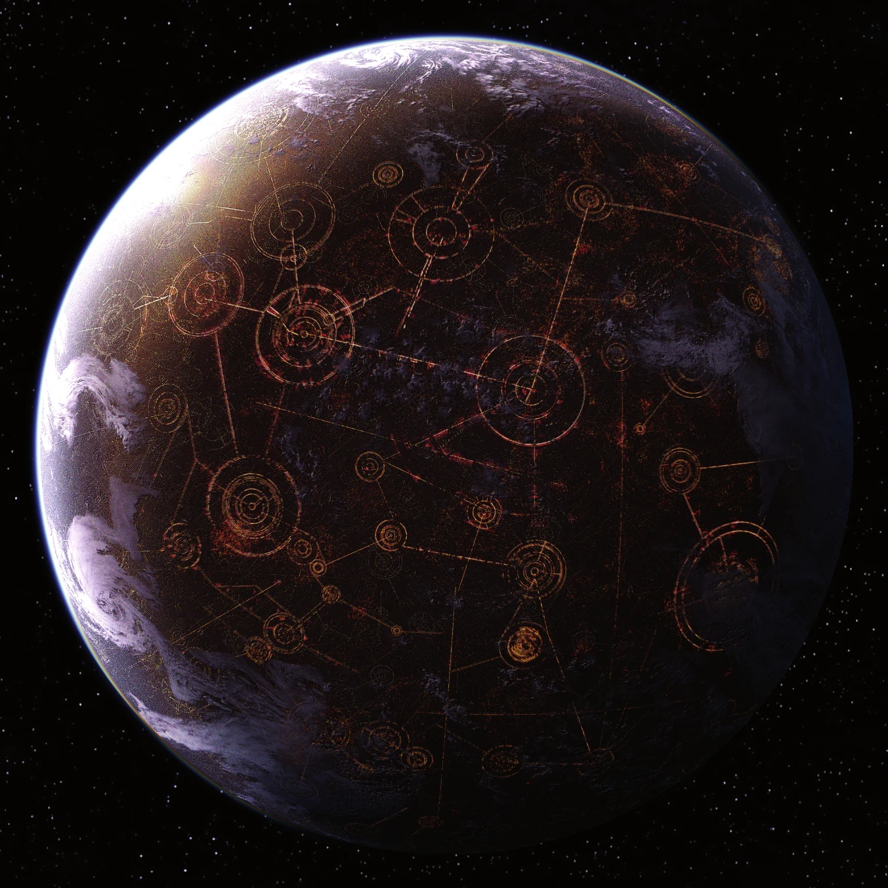

Introduction:
Greetings, fellow Star Wars enthusiasts! Today, we embark on an
exploration of the expansive and captivating Star Wars
universe,
a journey that has enthralled fans for decades. As we delve into the
galaxy far, far away, let's connect the dots and uncover the rich
history, characters, and lore that make Star Wars the iconic
phenomenon it is today.
The Star Wars Wiki:
Before we embark on our adventure, it's essential to have a
trusty guide.
What better way to navigate the vast Star Wars galaxy than by
visiting the Star Wars Wiki? This comprehensive resource is a
treasure trove of information, providing details on everything from
characters and planets to lore and behind-the-scenes insights.
The Force and Its Mysteries:
At the core of Star Wars lies the Force, a
mystical energy that
binds the galaxy together. From the wise teachings of the Jedi to
the dark allure of the Sith, the Force plays a pivotal role in
shaping the destinies of characters like Luke Skywalker, Obi-Wan
Kenobi, and Darth Vader. Explore the duality of light and dark and
the timeless struggle between the Jedi and the Sith.
Iconic Characters:
Star Wars introduces us to an unforgettable cast of
characters, each
with their unique stories and motivations. Whether's the charming
smuggler Han Solo, the wise and powerful Yoda, or the fearless
Princess Leia, these characters have become cultural icons. Discover
the depth and complexity of their journeys as they navigate the
challenges of the galaxy far, far away.
Galactic Locations:

The Star Wars universe is teeming with diverse and breathtaking
landscapes, from the desert planet of Tatooine to the lush forests
of Endor. Explore the bustling cityscape of Coruscant, the icy
terrain of Hoth, and the mystical beauty of Ahch-To. Each location
adds a layer of richness to the Star Wars saga, providing the
backdrop for epic adventures and timeless moments.
Epic Battles and Lightsaber Duels:
No exploration of Star Wars would be complete without diving into the
thrilling space battles and lightsaber duels that have become
synonymous with the franchise. Witness the clash between X-wings and
TIE fighters, and feel the intensity of lightsaber duels between Jedi
and Sith. These cinematic spectacles have left an indelible mark on
popular culture and continue to captivate audiences of all ages.
Legacy and Impact:
As we celebrate the Star Wars universe, it's impossible to ignore its
enduring legacy and impact on popular culture. Beyond the films, Star
Wars has expanded into animated series, novels, comics, and more,
creating a vast and interconnected galaxy for fans to explore. The
franchise has inspired generations of storytellers and continues to be
a source of joy, imagination, and inspiration for fans worldwide.
Conclusion:
In a galaxy far, far away, Star Wars has woven a tapestry of
adventure, heroism, and timeless storytelling. Whether you're a
seasoned fan or a newcomer to the galaxy, there's always something new
to discover and appreciate. So, grab your lightsaber, hop into your
starfighter, and embark on a journey that will take you to the
farthest reaches of the Star Wars universe. May the Force be with you!